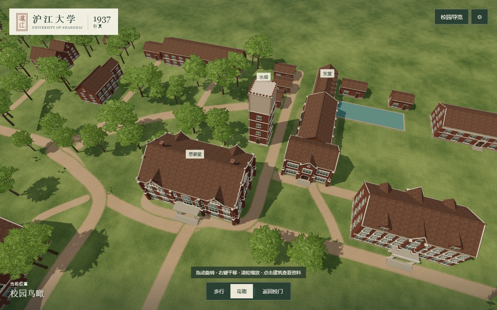
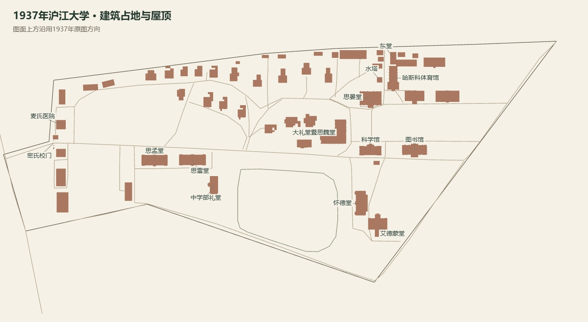

在导览里找到水塔
在 1937 年初夏的校园里，打开「校园导览」，搜“水塔”，再点结果。镜头转向塔身的同时，建筑介绍也换了。两处为什么能对上？

一次点击，三个角色
把导览当作一叠索引卡。每处地点都有一条记录。下面把程序的三个动作写成对话，逐条点开就能跟着这一条记录走。
卡片上的两种说法
el("placeTitle").textContent = s.name;
el("placeStory").textContent = s.story;
const record = s.record;
el("evidence").textContent = record.observed;
el("inference").textContent = "复原推定 · " + record.inferred;先把地点的名字和故事写进卡片。
从同一地点取出史料记录，把 observed 填入依据栏，把 inferred 加上“复原推定”后填入另一栏。
换个情境试试
能搜到水塔，取景也正确，但“复原推定”显示了别栋建筑的文字。先查哪里？
用旧称搜不到一栋楼，输入现名就能定位。优先核对什么？
想确认水塔的确切颜色，哪项证据更合适？
让老图上的一点落地
一张图可以放大打印，图上的一厘米却不能直接当作校园里的一米。要把水塔放回原位，先给老图配一把比例尺。

从纸面到校园
原图统一为 1550 像素宽。项目按四分之一英里跑道的描线长度估算，每个像素约合 0.4826 米。X 向图右，Z 向图下。
点下一步，跟着水塔的位置从图纸进入校园。
读懂两次减法
const SCALE = 0.4826;
function point(u, v) {
return [(u - 780) * SCALE, (v - 370) * SCALE];
}SCALE 保存每个像素对应的米数。point 收下图上横、纵两个读数。
先从读数里扣掉选定原点的位置，再乘比例。方括号把两个结果一起交回。
换个情境试试
图上两栋楼相距 20 像素，场景里应相距多远？
只有水塔偏东，跑道和邻楼都对得上。先核对哪项？
沿图纸直向下走十个像素，哪个量增大？
把水塔一层层搭起来
地点记录只写着塔的位置、宽度和高度。镜头里看到的砖塔、水箱和基座，是程序按这些尺寸搭出来的。
看一眼水塔的剖面
把模型想成叠起来的积木。水塔编号 154 对应 makeTower。它读入宽 w、高 h，以总高的 68.5% 为分界，下方用砖，上方换用浅色。
积木放在中心点
function makeTower(s, g) {
const { w, h } = s,
shoulder = h * 0.685;
box(g, 0, shoulder / 2, 0, w, shoulder, w, brick);
box(g, 0, (h + shoulder) / 2, 0, w, h - shoulder, w, std(0xb9aa9a));
box(g, 0, 0.25, 0, w + 0.38, 0.5, w + 0.38, stone);从地点记录 s 取出宽和高，算出两段塔身交接的高度 shoulder。
第一个 box 建砖身，中心放在砖身高度的一半。第二个放在交界与塔顶的正中，两段恰好相接。
第三个方块只有半米高，底面略宽，构成基座。
同一面墙怎样用四次？
在塔芯外面，循环让墙面每次转过四分之一圈。四面都做出窗和齿形女儿墙，仅第一面加木门。要把门移到另一面，就应先检查决定哪面加门的条件。
换个情境试试
水塔在正确位置，但所有立面都多了一扇门。先查哪里？
希望浅色水箱占比更大，但总塔高不变。该改什么？
抬高砖身后，中间出现一条空缝。先比对哪两个量？
飞过树冠要多高
按 F 起飞，向树冠靠近，再尝试下降。要解释镜头为什么停住，可以把校园想成一张每格都标着最高障碍的方格纸。

在起飞前登记障碍
程序先把建筑各部分占据的范围和树冠覆盖的范围写进高度表。同一格重叠着几件东西时，保留最高值。移动时只需查脚下那一格。
哪条下限更高？
function floor(x, z) {
const i = (Math.floor(z) - bounds.min.y) * width + Math.floor(x) - bounds.min.x;
return Math.max(flightSurface(x, z) + 1.5, heights[i] + 0.75);
}把横纵位置向下取整，换成表里某一格的序号 i。
先算地面或水面以上 1.5 米，再算障碍顶部以上 0.75 米。取两者较高的值，作为这里的飞行下限。
一大步拆成几小步
水平移动被拆成每步最多约半米的小段，每段依次查看 X、Z 方向能否通过。这样即使一次要飞很远，中间经过的矮墙也有机会被检查到。
换个情境试试
江面上空没有楼也没有树，下降时应在哪里停？
同一格既有矮屋又有高树。写入哪一个高度？
只在快速横移时穿过一条窄墙，先验证什么？
把校园装进一个网页
你改好了水塔卡片，在自己的电脑上也看到了新文字。为什么把 hujiang.html 发给别人，他们却还读到旧版？
工作底稿和发行本
开发入口，按顺序引用样式、绘图工具、素材和校园代码。
像装订一本图册，把引用的本地文件读出来，嵌进网页。
可单独复制的漫游页面，内容对应上次装订时的版本。
程序从哪里开始装订？
const fs = require("node:fs");
const path = require("node:path");
const read = (file) => fs.readFileSync(path.join(__dirname, file), "utf8");
let html = read("index.html");fs 负责读写文件，path 负责拼接文件路径。两者都由运行这个工具的 Node.js 提供。
read 按构建脚本所在目录寻找文件，用 UTF-8 读成文字。第一份读进来的是 index.html。
接下来的两次替换把样式和脚本分别嵌入页面，最后写出 hujiang.html。纹理和录音本身已经装在素材脚本里，也会随它们一起进入发行本。
怎样验收一次交付？
在项目目录运行 node build.cjs 完成构建。把新生成的 hujiang.html 单独放进空文件夹，断网打开，定位到水塔并展开卡片，核对刚修改的那一句。